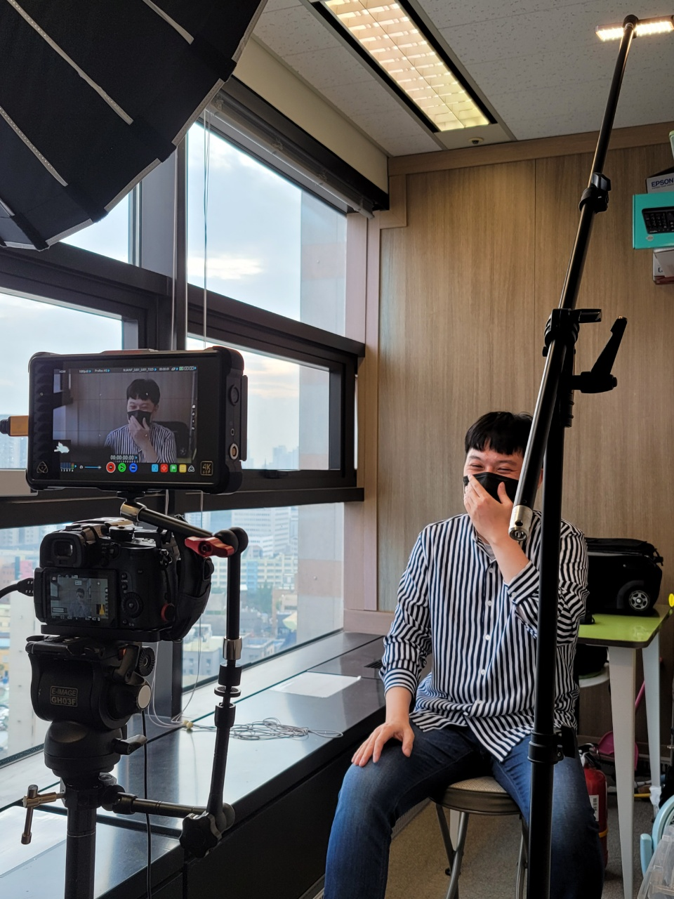

Lee Sang-ho Portpolio
Home
About
Videos

One Team
대표 : 이상호 (Lee.Sang.Ho)
인터뷰, 홍보영상, 메뉴영상_DID, 무빙포스터, 교육영상 촬영 및 편집
인터뷰 영상을 촬영 및 편집이 가능하며 메뉴를 영상으로 보여주는 DID를 만들 수 있습니다. 특히나 교육영상 같은 경우 자막작업을 익스프레션 코드를 통해서 보다 효율적인 작업을 할 수 있습니다.
e-mail: playpc21@naver.com